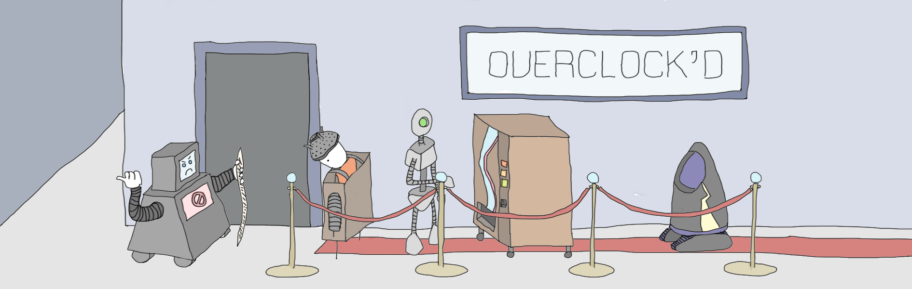

Nick Cassleman - UChicago Web Services illustrations
I went to college at the University of Chicago, and for a while I worked for their Web Services department. This was actually my first job programming computers! I wasn't very good yet, so they gave me a bunch of non-coding tasks to supplement my web work including the occasional art project.
After I left, they gave me a drawing tablet as a going-away present (so sweet!). Shortly after, they asked if I'd be interested in illustrating the hero images for the Web Services blog and I said oh yes pls. I never got paid for them.
Each illustration relates to the content of the article, so for each I'm providing a link to the article and a little description. I only included my favorites here, but you can dig around the blog for more.
Weather person doing an economic forecast
2015 UChicago App Challenge. Web Services fan a fancy "app challenge" to get folks to build phone apps. The winner that year was Open Macro which was about economic forecasting. The global weather map is based on real data!
Presenting: guts, the content of the human body
Content Strategy: An Overview. I don't quite remember the reasoning for this one. Content = substance = guts? Or maybe I was making a poop joke.
Researchers EXTRACTING DATA from WILLING SUBJECTS
How we can help researchers with data. The article talks about a workshop that helped researchers get data. You bet your dollar I captured those researchers collecting all kinds of data about their consumers.
Just talking to my therapist about this award-winning website
Work with your clients to get “good” design feedback. I think I saw the word client and thought about a person lounging on a psychoanalyst's chaise longue.
Mainstream browsers paint together at team-building workshop
What to Expect from HTML Email. Okay I thought this one was clever. We have some of HTMeLves building a web page and then four different browsers trying to paint it. If you look close, they're each a little different. I came up with MailShrimp way before Serial did "Mailkimp."
Business Rat knows how to speak PowerPoint
Refactoring Conditional Logic. Complicated conditional logic is like a maze. Rats love mazes. This one is presenting at AMAZE Conf. Get it?!
Entitled human; this is a safe space for robots exclusively

If you're a lonely human looking for cold hard love, I have the place for you. New York's hottest club is Overclock'd. This place has everything: exposed antennae, nostalgic dial-up sounds remixed, and enough WD-40 to make your wildest dreams come true.
When and why to use robots.txt files. The article was about robots.txt so I got my brother Bren to sketch a few robot concepts that I incorporated into this illustration. Imagine how terrifying it would be to be a human spy in a robot club.
"Hi, we promise this gift is not filled with flesh-eating bugs"
Web Application Security: As Important as it Ever Was. This article is about web security, so I made a little illustration of the Trojan Horse being delivered. It was ancient clown car filled with armed warriors. Obviously, the novel tactic was not part of Troy's threat model, as evidenced by the relaxed guards.
Even Santa is a slave to marketing trends
SEO: Tactics to Avoid. Normally SEO stands for Search Engine Optimization but here it's Santa Engine Optimzer. I think SEO has contributed to a decline in the web, so maybe this should feature Krampus instead. In my search engine, websites with lolcats would get higher rankings.
It's about the journey, not the destination
An Introduction to Automated Testing with Behat. This post was about testing, so I draw an elaborate Rube Goldberg machine that to executed a software test.
My dear friend and coworker Gabe McElwain wrote this article! He designed a moon colony flag that I've worn as a patch on my backpack since 2014. We used to share orange slices with each other at work.
God sees your inaccessible code :(
I'm not sure we they ever published the article I draw this picture for. I can't find it, anyway. It was about accessibility. I draw a special machine that eats websites and spits out long reports about their accessibility.